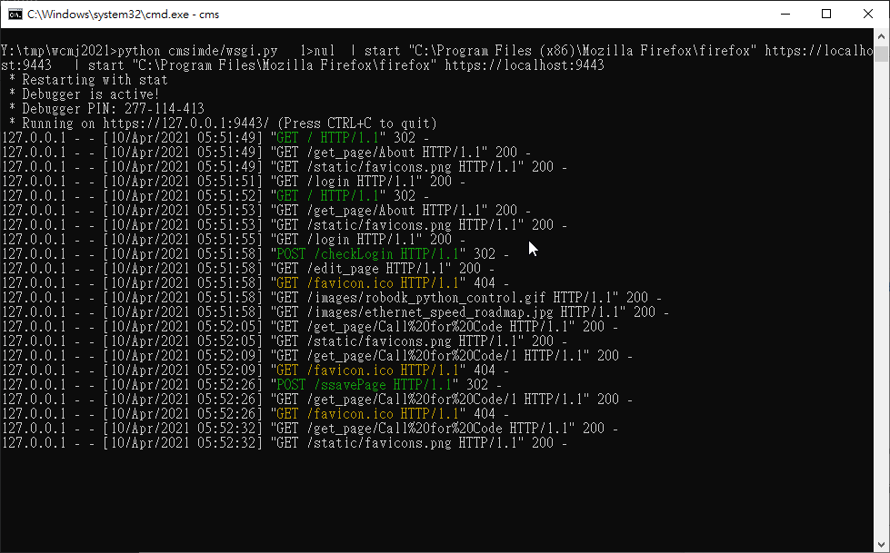
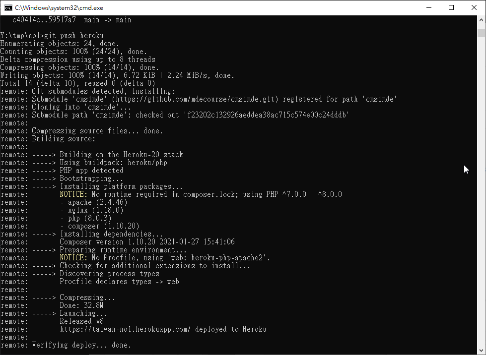
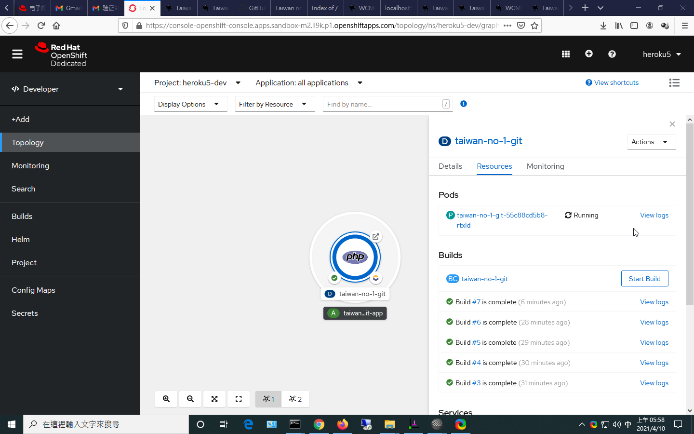

W7 <<
Previous Next >> W8
Call for Code
參賽發想: https://heroku5.github.io/taiwan-no1
近端動態網站編輯:

Heroku 同步網站 app 部署:

RedHat PHP App build:

Technology:
Python and iot:
https://github.com/IBM-Cloud/python-iot-raspberry-pi
Python and SQL:
https://github.com/IBM-Cloud/sql-query-clients
https://github.com/IBM-Cloud/github-traffic-stats
Flutter and Flask:
https://github.com/mohammedhashim44/Flutter-Flask-Login
Flutter and Raspberry Pi:
https://github.com/ardera/flutter-pi
https://www.ansible.com/
https://github.com/IBM-Cloud/clouddatabases-redis-helloworld-python
Bluemix:
https://blog.cavedu.com/2016/05/15/ibm-bluemix-%E7%AC%AC%E9%9B%B6%E7%AB%A0-ibm-bluemix-%E4%BB%8B%E7%B4%B9/
2021.03.24
以下為新聞稿:
近幾年，全球人類面臨前所未有的生存危機，極端氣候導致的天災更加頻繁，從 2020 年更有新冠肺炎在全球肆虐，顛覆所有人的生活方式，也重組了商業模式。IBM 一直致力於環境永續與災害預防，自 2018 年起攜手 Call for Code 組織、聯合國與 Linux 教育基金會，舉行「Call for Code Challenge 全球開發者大賽」。此競賽號召全球開發者利用 IBM 提供的免費資源與開放數據，聯合組隊，提交針對因應氣候變遷、水資源和打擊飢荒的解決方案。
今年更首度推出「Call for Code P-TECH Challenge」，全球 16 個國家與地區未滿 18 歲的 P-TECH 教育模式學生，將組隊貢獻他們的 STEM 專長，化身開發人員，呼應 IBM 的號召，一同解決攸關人類永續生存的議題！在台灣，來自台北科技大學、高雄科技大學、虎尾科技大學與仁德醫專四所 P-TECH 學校學生也將組隊參賽，甚至組織跨校、跨區的團隊，與來自全球 16 國的 P-TECH 學生同台競技，一同實踐科技向善的精神！
「Call for Code P-TECH Challenge」 考驗 P-TECH 學生創新能力、技術力與團隊合作能力
IBM 自 2011 年推動 P-TECH 教育模式（Pathways in Technology Early College High Schools）以來，一直致力於人才培育、串連在地產業與國際資源，為學生們規劃技能與職涯藍圖，以期幫助學生培養職場所需軟硬實力與數位技能，未來可順利接軌職場。基於希望學生運用所學與發揮團隊合作，一起為社會作出有正向積極的貢獻，IBM 今年首次推出「Call for Code P-TECH Challenge」，P-TECH 學生將以「氣候變遷」或「新冠肺炎」作為挑戰主軸，從現在至 6 月底，參賽學生將在設計思考工作坊中，進行主題發想、收斂概念、制訂行動計畫，運用 IBM 所提供的開放數據與模組進行程式編碼（如 Red Hat OpenShift、IBM Cloud、IBM Watson、IBM Blockchain、來自 IBM Weather Company 的大氣資料），向挑戰賽導師諮詢技術內容，並在 6 月底前舉行的 48 小時線上駭客松後提交最終解決方案。全球優勝團隊除了豐厚獎品外，將可擁有額外 4 週時間繼續發展專案並參與項目開發，並將專案引薦給 IBM 高階主管！
兩岸三地啟動 「Call for Code P-TECH Challenge」
「Call for Code P-TECH Challenge」已在這兩週陸續於兩岸三地正式啟動。在 3/23、3/24 的台灣啟動大會上，不少學生表示期望透過與不同學校、文化背景的成員合作，擦出新火花。臺北科技大學智慧自動化工程科二年級的林宏信同學表示，「雖然可能有語言問題和地理距離，但能運用科技軟體輔助溝通，也是新的一種學習體驗」，而其他同學也對於跨校、跨區組隊和交流躍躍欲試。
身為 2019 年 IBM Developer 倡議者也是 P-TECH 導師的 IBM 大中華軟體研發中心軟體工程師鍾純勝（Vincent Chung）不但親自在啟動大會上為學生說明 IBM 的技術工具和應用外，也鼓勵學生，「選題跟創意發想往往是最耗時、困難的地方，但通常確立有興趣的領域以及想解決的問題後，整個主題及實作內容將會明朗化。只要能懂得使用 IBM 提供的應用程式與服務，不需要非常高的技術門檻，也可以完成很有意義的服務與解決方案。」作為本賽事的倡議者，Vincent 將在賽事期間協助同學認識 IBM 開發者資源，期待看到參賽同學透過創意發想，還有國際舞台的同台競技。不但可以累積寶貴的團隊合作與跨文化學習經驗，也打造出屬於自己、具有應用價值並且可以解決人類生存問題的解決方案。
https://callforcode.org/global-challenge/
What is the Call for Code Global Challenge?
In the Call for Code Global Challenge, you can join the fight against climate change by building and deploying open source solutions in the cloud. By participating, you’ll build critical skills for yourself and your teams and deploy solutions to help communities across the globe.
Built on open source principles, the Call for Code Global Challenge asks developers and problem solvers to form teams and develop solutions that address specific problems in unique, clearly demonstrable ways. The most successful solutions are those scoped to have the greatest community impact with the smallest technological footprint. Last year’s winner Agrolly is a perfect example, with its mobile application to help small farmers better understand what to plant, based on weather patterns and crop characteristics.
Three global focus areas
According to the United Nations, “The impacts of climate change are global in scope and unprecedented in scale. Without drastic action today, adapting to these impacts in the future will be more difficult and costly.” Given the far-reaching and devastating effects of climate change, we have divided the 2021 Global Challenge into three sub-themes:
What is the problem?
Worldwide consumption and production drives the global economy, yet the current use of natural resources is unsustainable. The global material footprint rose nearly 18 percent from 73 billion metric tons in 2010 to 85.9 billion metric tons in 2017, the UN reports. That’s why Sustainable Development Goal 12 aims to achieve economic growth, sustainable development, and reduce our ecological footprint by changing the way we produce and consume goods and resources.
How can technology solve the problem?
Technology can help in many ways, from recommendations on energy efficiency to highlighting the carbon footprint of online purchases. The goal is to take into account all phases of resource use to do more and better with less.
The idea
One of the more pressing challenges in addressing waste and shifting to a more circular economy is the increasing complexity of products. Electronics are getting smaller and more sophisticated, making recovery and reuse of materials challenging. Product designers should consider how to create products with end-of-life in mind, by reducing the number of components, for example. Communities could benefit from developing infrastructure, policies, and systems to support repair, reuse, and recycling.
To encourage this change, we propose creating a transparent and trustworthy platform for trading resources and knowledge, as well as providing access to a community of experts. This platform will enable producers and consumers to build and buy products in a sustainable way for our society — by reducing waste, increasing the use of recycled materials, and improving the overall repairability of products.
The platform would support the two parties supporting sustainable production with recycled materials:
A producer or a manufacturer who can find and compare price, quality, and carbon impact of recycled materials while learning about best practices for recyclable processing through a trustworthy, real-time trading platform
A recycled material supplier who can sell recycled resources directly to producers through a marketplace at competitive rates

- The user interacts with a web application for the marketplace.
- The React app communicates with the back-end APIs.
- The Fastify back end handles data requested by the web app and exposes some public endpoints for material market data through a RESTful API.
- The back end queries Watson Discovery for updated information on materials.
- Discovery manages a collection of recycled and non-recycled material information, such as average prices, carbon impact, and quality. Discovery enriches the data with natural language processing so that it can be more easily indexed.
- Discovery crawls public websites for updates on current material information.
- The back end stores and retrieves information on material that is provided by users in an IBM Cloudant NoSQL database.
- A Kubernetes cluster is used for a scalable, flexible, modern containerized environment.
- New Relic provides Full-Stack Observability and monitoring within the Kubernetes environment
W7 <<
Previous Next >> W8